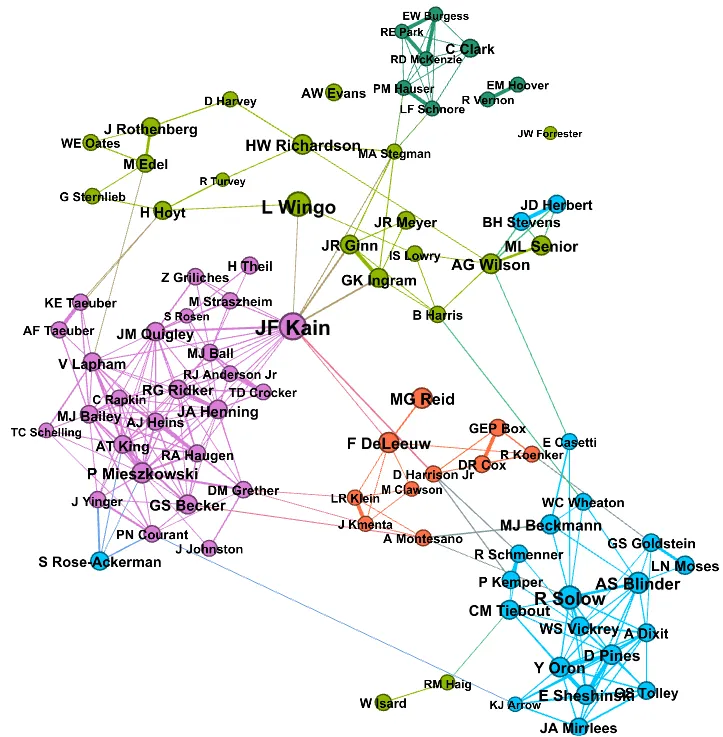
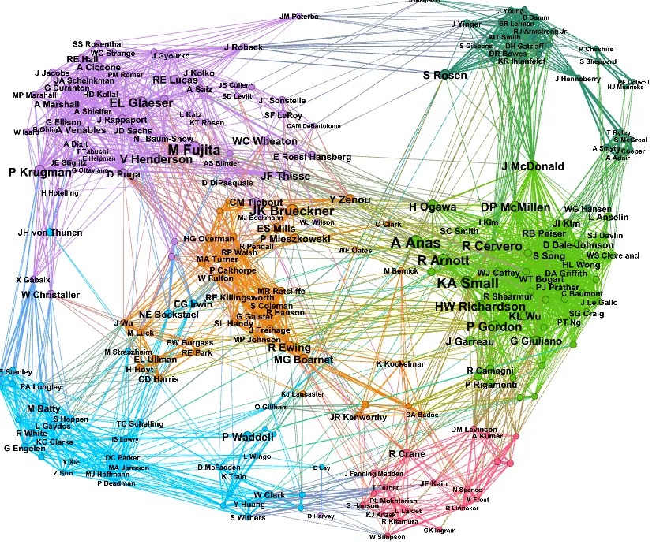

17 Urban Economics
Considering the city as an object of analysis for economists is fairly recent: a thread on the history of US-born urban economics.
Beatrice Cherrier (twitter thread)

Fig: Cocitaion 1975-1979
“Urban economics looks just like macroeconomics to me,” one commenter writes, “fragmented, with many professional associations and fora. I don’t see fields that would be more unified. Development? IO?” I have sometimes thought of urban economics as equivocal, a bustling field in the 1960s, almost disappeared in the 1980s, which then became a province of geographical economics only to reclaim a distinctive identity 10 years ago. And I view macroeconomics as just the opposite: uncontested objects (aggregate unemployment, inflation, business cycles), a changing but well-defined set of models and tools, members who unambiguously identify as macroeconomists, boundaries. When microeconomists showed impatience with macro models in the 1980s and 1990s and sought to explain the high level of aggregate wealth in the US and UK through looking at demography, precautionary savings or various types of heterogeneity, they knew they were trepassing. But for Paul Krugman, urban economics at the turn of the 1990s was just a small “peripheral field,” and what mattered was space and agglomeration, not the city. No need to knock at the field’s door.
“As I read through your material,” another commenter counters, “I come away with the impression that what you call urban is usually little more than a topic within some other, often slightly more established, field/branch of economics: labor, public finance, development.” There’s some truth to this, for sure. A lot of urban economics in the 1960s and 1970s was local public finance; it was about market failures, federalism, Tiebout sorting, land taxes and Henri George theorems.
The topics discussed in urban economics seminars have changed: suburbanization in the 1950s, segregation, pollution and congestion in the 1960s and 1970s, gentrification, urban sprawl, edge cities and crime in the 1980s and 1990s. The methods have changed as well: from partial to general equilibrium and monopolistic competition models in theory. From gravity models to hedonic pricing and discrete choice models to shift-share IVs. But all these methods have been imported. What tool did urban economics ever export, or produced for itself?
So I’m left with an evergreen question: when is an economic field a “field,” and not just a “topic”?
“The city” was not a topic economists thought that they had much to say about, before the 1950s.
Urban had the Alonso-Muth-Mills model monocentric model, but it wasn’t a general equilibrium model explaining location and land rent, the size of cities, their boundaries. Residential economists succeeded where urban economists at large failed, with the Rosen-Roback model.

Fig: Cocitaion 2005-2009
What these networks and the archives we pair them with show is a phenomenon that I had never carefully thought about: the coexistence of contributors who would call themselves urban economists (Kain, Mills, Quigley, Wingo, Richardson, Henderson, Fujita, Brueckner, Arnott, Anas, Glaeser among others) with visitors from other fields. Some never really meant to contribute to urban, their work became relevant as they help urban economists to address specific issues (Tiebout, Becker, Schelling, Reid, Rosen), but other purposively entered the field at some point, with the goal of proposing a workshorse model that answers key questions about the structure, size or location of cities, or their hierarchies. Solow and Mirrlees did so in the 1970s (and failed). Krugman did in the 1990s and succeeded in subsuming urban economics into his New Economic Geography. At least for a while. Recently, some economists have reclaimed the city as a distinctive object.
17.1 Neoliberal Planning
Garza
The main difference between academic mainstream Economics and Urban Planning is methodological, in terms of what is considered a valid approach to scientific knowledge. Economics builds upon logical positivism; it first performs deductive theory construction that “describes” reality, and then subsequently tests its theoretical predictions, which in some cases (not all the cases) lead to policy prescriptions. In contrast, Urban Planning is an action-oriented and problem-solving scientific discipline. It inductively produces normative theory, which explicitly shows the analyst’s point of view regarding the topic and how to intervene on it (public policy advice).
Mainstream Economics is in essence defined by the method and theoretical approach, not by the topic (the economy). This allows it to engage with a wide variety of topics, one of them being the spatial analysis of the built environment, which is also the topic of academic Urban Planning.
Neoclassical urban planning
When mainstream economics meets urban planning, we get a peculiar approach to understanding the built environment, which I call “Neoclassical Urban Planning”. The first stage of this approach entails the development of abstract theoretical models of cities’ spatial structure. These models use clearly defined property rights and rational behavior assumptions to deductively determine the “optimal” spatial distribution of economic activities, real estate values and structural densities. In the second stage, real-world problems like transport congestion or housing unaffordability, are treated as “deviations” from this spatial optimum. Economists can offer policy advice, only after comparing real-world cases to the optimum as an ideal benchmark. That contrasts with planners’ approach, describing the spatial structure of actual cities and their corresponding problems, with their normative benchmark based on perceived reality.
The empirical research agenda in mainstream urban economics systematically tests and builds upon its abstract theoretical models, and it is generally believed to be exempt from normative value judgements. However, the methodology employed by economists does build upon a crucial value judgment: competitive markets are the comparison benchmark with the highest economic well-being. This is the case, even in fields of neoclassical research that engage with market failures, like industrial organization, endogenous growth theory, and economic geography.
In the case of Urban Economics, the normative benchmark for economists is spatial general equilibrium in perfect competition with perfect information, determined by agents’ willingness to pay for different locations with given revenue and transportation costs. This is the benchmark against which to compare real-world spatial outcomes, and towards which these economists’ policy advice wants to nudge the urban economy.
From Neoclassical Urban Planning to Neoliberal Urbanism
Urban Planning scholars have identified that Neoclassical Urban Economics is normative in the above-described sense. However, these scholars do not exactly define it in the terms I do here: pushing the urban economy towards its competitive spatial general equilibrium using public policy tools, for example: demand-side housing subsidies, property tax abatements, interest rate subsidies, or the de-regulation of construction, environmental and urbanistic requirements. Urban Planning scholars tend to summarize this type of public policies as Neoliberal Urbanism, which in the case of developing countries has become predominant since around the 1990s. Before that, and with the support of multilateral organizations and donors, urban planners in developing countries tried to exercise planning in the proper sense of the term: elaborating and reflecting about strategic and large-scale metropolitan plans, which were attempts at pre-determining the spatial structures, quality of the built environment, and construction styles, in advance to the operation (or lack thereof) of the real estate markets.
During the neoliberal era, the role of planners has been changed into facilitators of market-led urban development. The corresponding scholarship has accommodated this new development narrative by replacing its metropolitan grand-scale and strategy approach, with the impact assessment of public policy actions. The original attempts at large-scale socio-spatial transformation using planning tools have been diminished. After all, and following what described above, planning is government intervention that might shift the urban economy away from its market-determined optimum.
After 30 years of neoliberal urbanism… where are we now?
After more than 30 years of neoliberal urbanism it is unclear if developing countries’ cities have had a better socio-economic performance, or if their spatial structures and interactions are more efficient. In the jargon of Neoclassical Urban Economics, it is unclear if they have moved closer to their normative benchmark: the optimal spatial general equilibrium. Perhaps the reason is that this benchmark is an abstract theoretical construction in the first place, which in addition might be unachievable according to the second-best theorem, a feature conveniently forgotten by some neoclassical economists.
Another possibility is that market forces are in fact pushing individuals closer towards their individual optimum. Let us be reminded that developing countries’ cities have extensive informal markets of labor, transportation, and real estate, which by definition are non-regulated or taxed. Therefore, in the neoclassical logic, these would be free markets converging towards general equilibrium, with individuals efficiently responding to market incentives. Such is the romantic view of some neoclassical analysts, who forget that these urban inhabitants are “optimizing” while exposed to extreme information asymmetries, non-convexity (low liquidity) of real estate assets, and externalities (pollution, congestion, criminality). Accumulated empirical research does not signal that urban efficiency has improved anywhere during the last 30 years.
In contrast to the approach of neoclassical urbanism, urban planners explicitly state their normative view and policy objectives (ideological in the jargon of mainstream economics). For example, planners state the need for government-provided or government-funded housing, to alleviate its scarcity; also, they propose inclusionary zoning, in fighting spatial segregation. Such plans and objectives do not require any abstract comparative benchmark, but explicit real-world comparisons and metrics, even if they seem biased or simplistic in the eyes of neoclassical economics.
(See link below for a reference list next entry for background article)
Garza Abstract
This article presents the one-sided intellectual influence of Economics on Urban Studies & Planning, the case of two social science disciplines with different epistemologies and approaches to policy advice. Subsequently, it presents the emergence of the so-called evidence based policy (EBP) approach in Economics, comprising experimental (randomized control trial) and quasi-experimental (difference-in-differences and propensity score matching) methods. The article shows that even though EBP claims to be exempt from normative/political, and even theoretical, considerations, it builds upon two features of neoclassical economics: sufficiency and separability. These conditions comprise its normative neoclassical theory background. We discuss the neoliberal turn in development narratives and their influence on urban planning, which coincides with the emergence of EBP. We analyze some EBP examples in the urban planning scholarship.
Garza Memo
EBP hides or denies its own neoclassical theory background, built upon the conditions of sufficiency and separability. These two features are derived from the modularity and normative approach of neoclassical economics. EBP builds upon neoclassical economics not only in methodological terms, but also in terms of its normative content: pure competition general equilibrium as the comparison benchmark against which to compare real-world cases, where experiments can reveal individuals’ preferences. This is a static-comparative normative framework, which in dynamic terms neglects the structural change that defines processes of economic development at the national and regional scale.
The influence of traditional neoclassical urban economics and the growing importance of EBP on the academic literature in Urban Studies & Planning coincides with its neoliberal turn. That is, a movement toward the logic of “small fixes,” and away from the larger “meta-narratives” in both Development Economics and Urban Planning, dismissed as unnecessary or unmanageable.
Garza (2023) Urban strategy in an era of public policy assessment: Beyond the methodological divide